We Build Careers
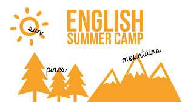
قبرس (شمالی)
جزیره قبرس یکی از امن ترین مکانهای دنیاست.
Summer 2018- English Language Learning Classes
کمپ تابستانی یادگیری زبان انگلیسی + گردش و تفریح
دوره های حداقل یک هفته ای قابل تمدید-
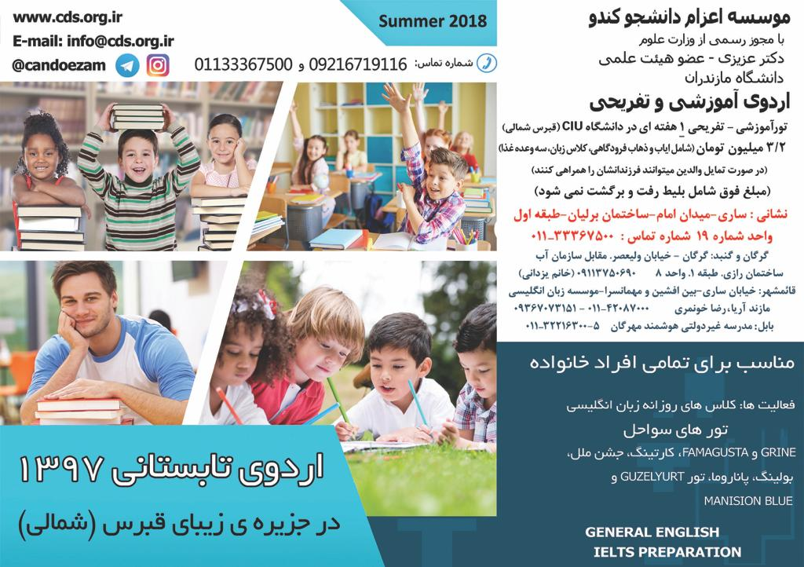
Eastern Mediterrenean University
این دانشگاه تنها دوره های یک هفته ای/ دو هفته ای/ سه هفته ای/ چهار هفته ای دارد.
دوره ی یک هفته ای شامل آموزش زبان نمی شود.
Eastern Mediterrenean University
(برنامه یک هفته ای )
یکشنبه 3 تیر تا دوشنبه 11 تیر
یکشنبه 10 تیر تا دوشنبه 18 تیر
یکشنبه 17 تیر تا دوشنبه 25 تیر
یکشنبه 24 تیر تا دوشنبه 1 مرداد
یکشنبه 31 تیر تا دوشنبه 8 مرداد
دوره ی یک هفته ای شامل آموزش زبان نمیشود
Eastern Mediterrenean University
(برنامه دو هفته ای )
یکشنبه 3 تیر تا جمعه 15 تیر
یکشنبه 10 تیر تا جمعه 22 تیر
یکشنبه 17 تیر تا جمعه 29 تیر
یکشنبه 24 تیر تا جمعه 5 مرداد
یکشنبه 31 تیر تا جمعه 12 مرداد
یکشنبه 7 مرداد تا جمعه 19 مرداد
یکشنبه 14 مرداد تا جمعه 26 مرداد
یکشنبه 21 مرداد تا جمعه 2 شهریور
یکشنبه 28 مرداد تا جمعه 9 شهریور
Eastern Mediterrenean University
(برنامه سه هفته ای )
یکشنبه 3 تیر تا جمعه 22 تیر
یکشنبه 10 تیر تا جمعه 29 تیر
یکشنبه 17 تیر تا جمعه 5 مرداد
یکشنبه 24 تیر تا جمعه 12 مرداد
یکشنبه 31 تیر تا جمعه 19 مرداد
یکشنبه 7 مرداد تا جمعه 26 مرداد
یکشنبه 14 مرداد تا جمعه 2 شهریور
یکشنبه 21 مرداد تا جمعه 9 شهریور
Eastern Mediterrenean University
(برنامه چهار هفته ای )
یکشنبه 3 تیر تا جمعه 29 تیر
یکشنبه 10 تیر تا جمعه 5 مرداد
یکشنبه 17 تیر تا جمعه 12 مرداد
یکشنبه 24 تیر تا جمعه 19 مرداد
یکشنبه 31 تیر تا جمعه 26 مرداد
یکشنبه 7 مرداد تا جمعه 2 شهریور
یکشنبه 14 مرداد تا جمعه 9 شهریور
مدارک لازم جهت ثبت نام:
۱. صفحه مشخصات پاسپورت را اسکن کنید.
۲. فرم ثبت نام کندو را پر کنید – دانلود کنید.
۳. مبلغ / مبالغ اعلام شده را به حساب موسسه واریز کنید. شماره حسابهای بانکی کندو – کلیک کنید
(دو هفته ای 710 یورو/ یک هفته ای 610 دلار)
اسکن پاسپورت و فرم ثبت نام و همچنین تصویر فیش واریزی را به نشانی ایمیلinfo@cds.org.ir ارسال فرمایید.
متقاضیان همچنین میتوانند به یکی از نشانی های زیر جهت ثبت نام مراجعه کنند.
محل های ثبت نام:
ساری: میدان امام. ساختمان برلیان.بالای بانک تجارت.طبقه اول واحد 19.
تلفن: (لطفا قبل از مراجعه حضوری با این شماره تماس بگیرید: ۰۹۱۱۲۱۵۵۰۳۴)
قایمشهر: خیابان ساری – بین افشین و مهمانسرا – موسسه زبان انگلیسی مازند آریا (مازند کیمبریج سابق) - تلفن:۳۵۳۶۵۳۵۵ (آقای خونمری)
گرگان و گنبد: گرگان - خيابان وليعصر. مقابل سازمان آب. ساختمان رازي. طبقه ١. واحد ٨ - ۰۹۱۱۳۷۵۰۶۹۰ (خانم یزدانی)
قابل توجه والدین و یا همراه کودک زبان آموز/ زبان آموزان بزرگسال:
۱. گواهینامه بین المللی بهمراه داشته باشید. برای گواهینامه بین المللی به آژانس های مسافرتی در ایران مراجعه کنید.( هزینه اجاره خودرو در قبرس حدود ۶۰ تا ۱۰۰ هزار تومان در روز).
۲. میتوانید در صرافی ایرانی شهر زیبا و توریستی فاماگوستا (۵۰ کیلومتری شهر نیکوزیا) با کارتهای ATM ایرانی پول دریافت کنید.
فروشگاه لمار واقع در پردیس دانشگاه
۳. خرید مواد غذایی .... را از فروشگاه Erulku انجام دهید. ( فاصله از دانشگاه با خودرو کمتر از ۵ دقیقه)
۴. اتوبوسهای دانشگاه در ساعتهای معین تقریبا به همه جای شهر لفکوشا (نیکوزیا) رفت و آمد دارند.
۵. زبان اموزان و همچنین همراهان آنها میتوانند از کمک یکی از نمایندگان شرکت کندو که در پردیس دانشگاه بطور شبانه روزی حضور دارد بهره مند شوند.
۶. قوانین نظام وظیفه برای دانش آموزان پسر (جهت اخذ پاسپورت)
۷. اتباع ایرانی برای ورود به کشور قبرس شمالی نیاز به ویزا ندارند. هزینه ای برای صدور ویزا در فرودگاه شهر ارجان (کشور قبرس شمالی) دریافت نمیشود.
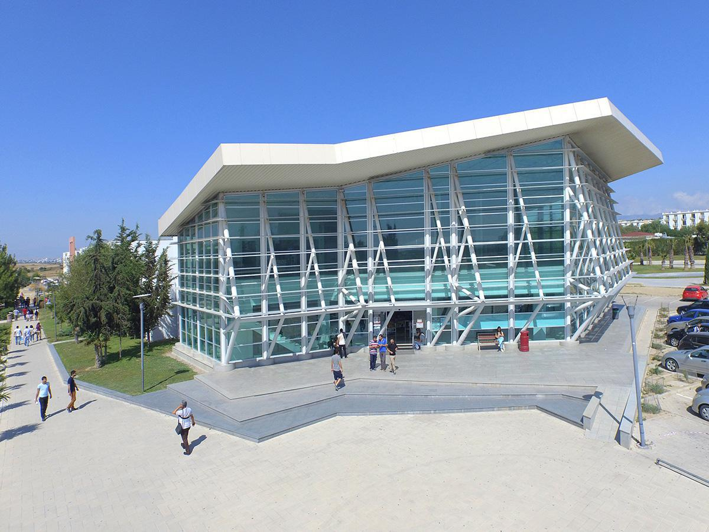
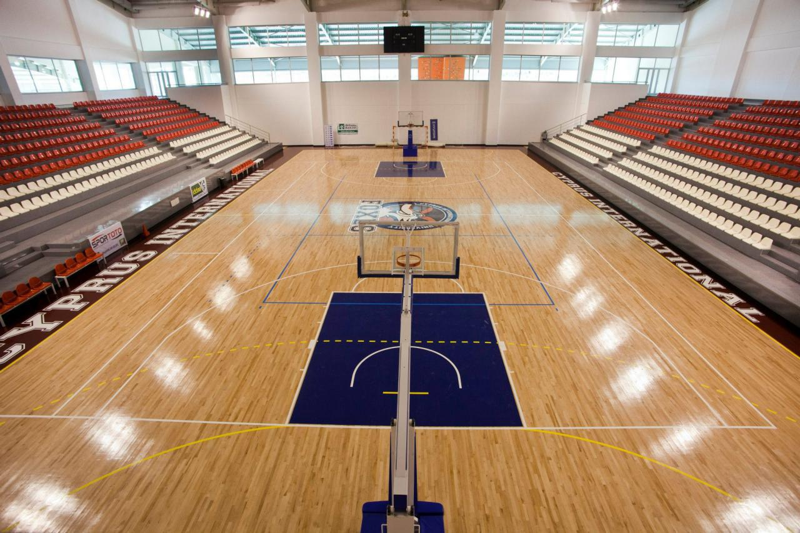
مکانهای دیدنی در قبرس شمالی:
قبرس شمالی | North Cyprus
جمهوری قبرس کشوری جزیره ای است در شرق دریای مدیترانه که پایتخت آن نیکوزیا است. این کشور به دو بخش ترک نشین و یونانی نشین تقسیم می شود که در آن هر دو زبان ترکی و یونانی رسمی هستند. یونانی ها ارتودوکس و ترک ها مسلمان هستند.اين جزيره از شمال با تركيه، از جنوب با مصر، از شرق با سوريه و از غرب با يونان همسايه است. اين جزيره يكی از مقاصد مهم گردشگری دريای مديترانه است و سالانه بيش از 4/2 ميليون گردشگر را به خود جذب می كند.مساحت قبرس 9252 کیلومتر مربع، جمعیت آن طبق برآورد سال 2008، 801622 نفر، واحد پول آن یورو و پیش شماره تلفن آن 357 است. همچنین قبرس عضو اتحادیه اروپا و اتحادیه کشورهای مشترک المنافع می باشد.قبرس در سال ۱۹۶۰ استقلال خود را از بریتانیا کسب
کرد و حکومت مستقل قبرس براساس مشارکت جوامع ترک و یونانی در اداره امور این جزیره اعلام موجودیت کرد و بریتانیا، یونان و ترکیه حق حاکمیت دولت قبرس را تضمین کردند. بخش ترك نشين قبرس در سال 1983 اعلام استقلال كرد و نام خود را جمهوری ترك قبرس شمالی گذاشت. جمهوری ترک قبرس شمالی که معمولا قبرس شمالی خوانده میشود توسط هیچ کشوری به جز ترکیه به رسمیت شناخته نشده است. قبرس به 6 ناحیه با نام های فاماگوستا، گیرنیا، لارناکا، نیکوزیا، لیماسل و پافوس تقسیم بندی شده است.
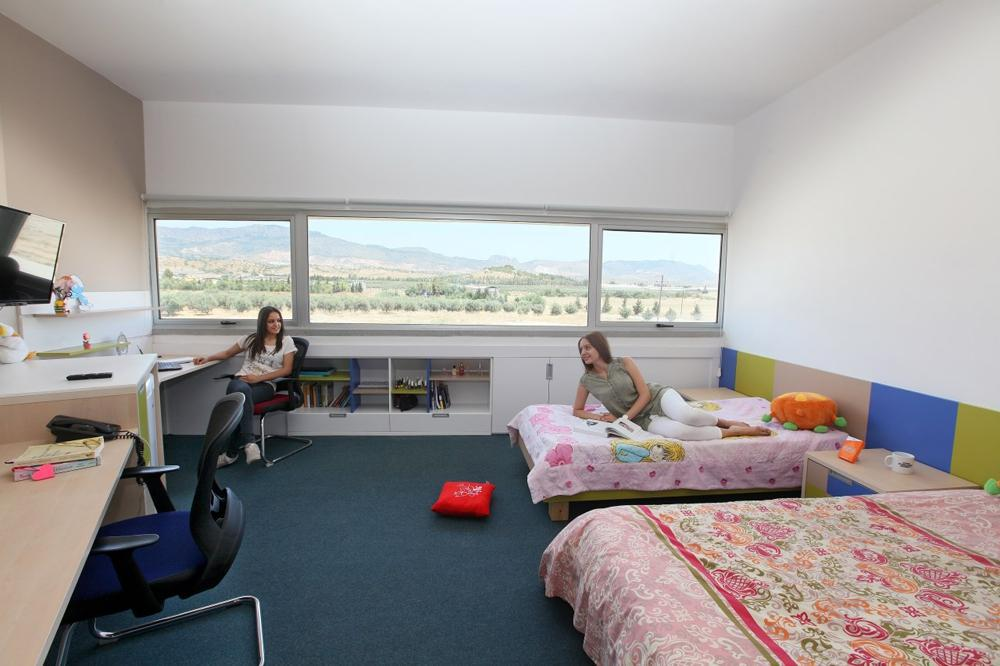
شهر گیرنیا ( گیرنه ) :
یکی از معروفترین شهرهای قبرس شهر گیرنه میباشد که مناظر زیبای توأمان کوه و دریای آن بسیار مورد توجه گردشگران قرار میگیرد. این شهر در کنار جذابیتهای طبیعی خود دارای امکان تاریخی و فرهنگی دیدنی نیز میباشد .تاریخ این شهر باستانی به اواخر جنگ تروژان بازگشته و طبق آخرین یافتههای باستانشناسی، این منطقه زیستگاه و محل اسکان انسانها در عصر حجر (3000 تا 5800 سال قبل از میلاد مسیح) بوده است.
سنت هیلاریون :این قصر بعد از ورود یک راهب تارک دنیا که از سرزمین های مقدس به این منطقه سفر کرده بود و در غاری در کوه های این
مکان از دنیا رفته بود به سنت هیلاریون نام گذاری شد. بعد از مرگ این راهب مقدس در قرن 10 بیزانس ها تصمیم به ساخت این قصر گرفتند تا یادگاری از ایمان و عقیده برای جهانیان شود.
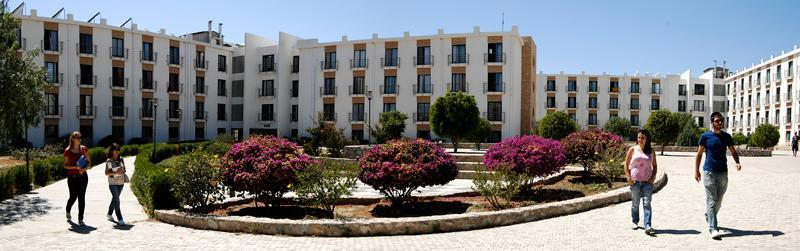
بلاپایز :
زیبایی بلاپایز یک افسانه است. این صومعه بر بلندیهای جزیره در فاصله 10 دقیقه ای تا شهر بنا شده است. شما با دیدن این صومعه با تاریخ هزار ساله و داستان های جنگهای صلیبی و خونین تاریخ آشنا خواهید شد. تماشاگر زیباترین منظره جزیره خواهید بود . در حالی که می توانید از مزه های مختلف غذاهای قبرسی در رستوران های اطراف این صومعه استفاده نمایید.
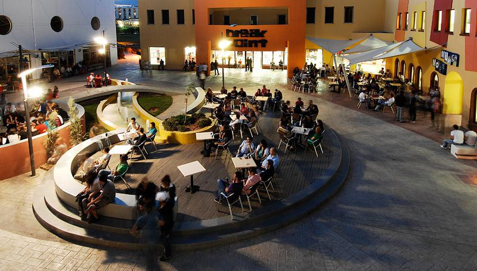
شهر فاماگوستا ( ماگوستا ) :
ماگوستا در شمال شرقی قبرس قرار دارد .این شهر معروف مدیترانه ای دارای تاریخ غنی وفراوانی است و زیبا ترین کلیساها و ساختمانهای قدیمی با معماری مدرن را باید در ماگوستا دید . این شهر یکی از بهترین شهرهای قبرس برای گردش گری میباشد وتمام توریستهای به قبرس آمده را جلب تماشای خود می کند. ماگوستا همچنین دارای ساحلهای زیبا با شنهای طلایی می باشد که در شمال قبرس مشاهده می شود و خیلی کم یاب می باشند .
کلیساهای بیشتری در قبرس وجود دارد که تاریخ کلیساها مربوط به زمان قرن سوم میلادی می باشد . شهر قدیمی فاماگوستا به صورت گسترده پایتخت تاریخی قبرس محسوب می شود. قدمت این شهر به 1100 سال قبل از میلاد می رسد. شهر فاماگوستا منزلگاه مناظر و مکان هایی مثل خرابه های شهر سالامیس – خانقاه سنت برناپاس – مسجد لالا مصطفی پاشا – کلیسای جامع سنت نیکولاس و برج اوتلو می باشد.
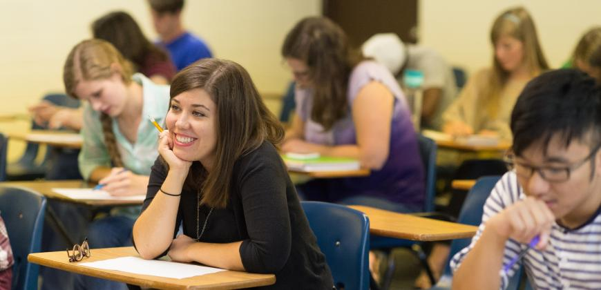
شهر خراب سالامیس :
قدمت این شهر به 1100 سال قبل از مسیح برمی گردد. کاشف خرابه های سالامیس توسر پسر تلمن پادشاه جزیره یونانی سالامیس بود . بعد از کشتن برادرش در جنگ ترووا از طرف پدرش به تبعید محکوم شد و به جزیره قبرس نقل مکان کرد و در اینجا خرابه های سالامیس را به تصرف خود در آورد. این شهر که در قرن چهارم بر اثرزلزله از بین
رفته بود دوباره بازسازی شده و با نام قسطنطنیه پایتخت جزیره شد. قدمت این شهر ه 1100 سال قبل از مسیح برمیگردد.
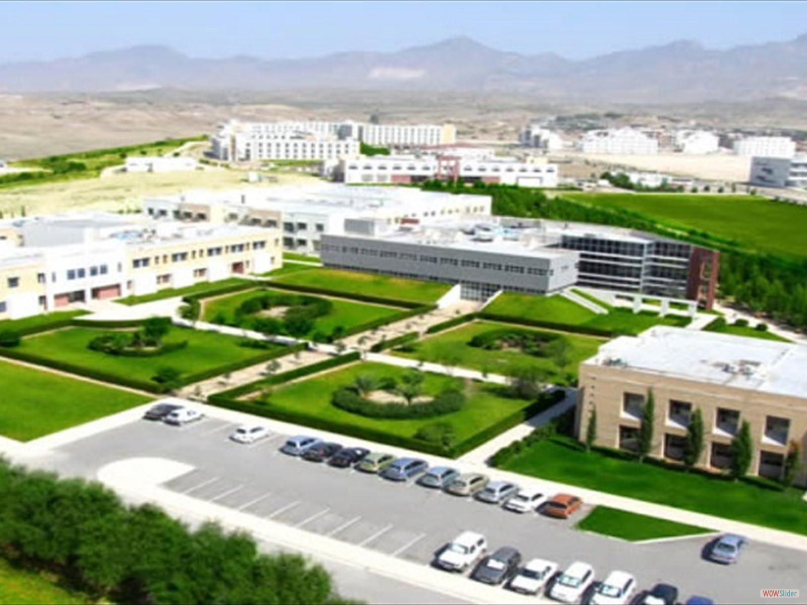
مسجد لالا مصطفی پاشا :
در اصل با نام کلیسای جامع سنت نیکولاس شناخته شده و بعدها با نام مسجد سنت صوفیا در ماگوسا یکی از بزرگترین ساختمان های قرون وسطی در این شهر محسوب می شود.
که بین سالهای 1298 و 1400 ساخته شده و در سال 1328 به کلیسای جامع موقوف شد. این کلیسا بعد از حمله عثمانی در سال 1951 به قبرس و تصرف ماگوسا به مسجد تغییر یافت و امروزه به عنوان یک اثر قدیمی مورد توجه گردشگران قرار دارد
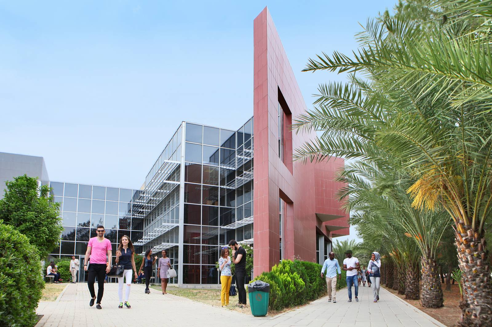
خرید در فاماگوسا :
سوغاتی های قبرس با کیفیتی عالی به وفور یافت می شوند و معمولا در مقایسه با نمونه های بریتانیایی، ارزان تر هستند.وقتی در فاماگوسا خرید می کنید منتظر مجموعه ای محصولات چرمین باشید مانند کیف های دستی و کفش به همراه جواهرات، وسایل قیطانی و سرامیکی، مشروبات و کنیاک محلی قبرس. همپنین تعداد زیادی از برند شناخته شده را در سوپرمارکت های محلی مانند Paralimni خواهید یافت. قابل توجه است که در نزدیکی این شهر فروشگاه هایی وجود دارند که 24 ساعت شبانه روز در 7 روز هفته خدمات ارائه می دهند.
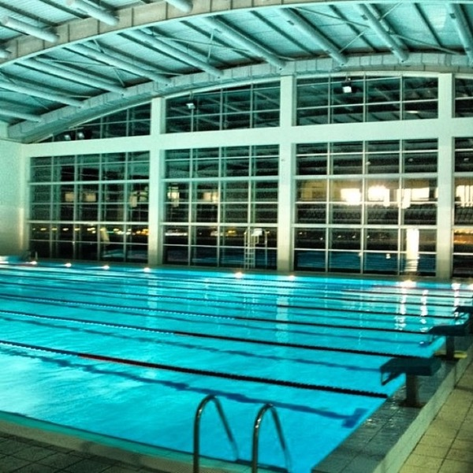
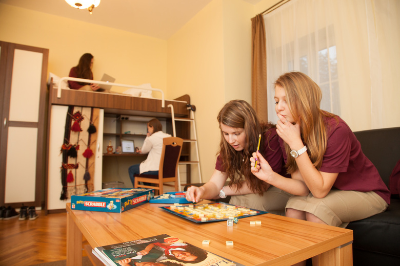
خرید در فاماگوسا :
اکثر فروشگاه های فاماگوسا مانند سراسر قبرس، ساعت کاری متفاوتی دارند. با توجه به فصل پر گردشگر و کم گردشگر از ماه اکتبر تا آوریل ساعت فروش از 8 صبح تا 5:30 بعدازظهر و معمولا با تعطیلی کوتاهی برای ناهار در حدود ساعت 1 همراه است. بین ماه های می و سپتامبر - ساعات خرید در فاماگوسا طولانی تر است و فروشگاه ها تا ساعت 7 عصر و حتی تا 10 شب نیز باز هستند. همچنین مغازه ها روزهای چهارشنبه و شنبه (البته به جز سوپرمارکت ها) زودتر تعطیل می کنند و روزهای یک شنبه تعداد کمی از آنها مشغول به کار هستند .

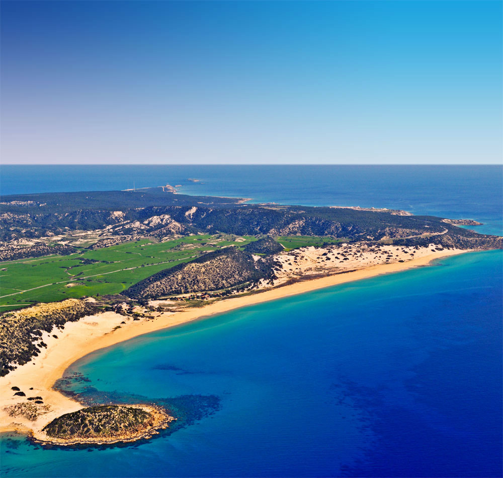
خرید در گیرنه :
وقتی نوبت به خرید در گیرنه می رسد، ناامید نخواهید شد. گیرنه و نیز نیکوزیا حاوی بهترین گزینه های مرکز خرید در تمام قبرس شمالی می باشند که قیمت سوغاتی هایشان مناسب بوده و
صنایع دستی قبرسی فراوانی دارند .تجربۀ خرید در قبرس شمالی کاملا با خرید در جنوب فرق می کند چرا که مغازه ها بزرگتر هستند و به صنعت پررونق توریسم وابسته اند. در گیرنه باید به دنبال مراکز خرید، بازار هدیه های ارزان قیمت و فروشگاه های زنجیره ای سرشناس بگردید که این امر برای اکثر گردشگران تغییر نیروبخشی می باشد. در قبرس شمالی، فروشگاه ها معمولا توسط محلی ها یا ترکیه ای ها اداره می شود و مناسب هرگونه سلیقه ای می باشند .
ساعات کار فروشگاه های گیرنه بین ماه های اکتبر و آوریل کاهش می یابد و اکثر فروشگاه ها حدود ساعت 5 بعدازظهر تعطیل هستند. هرچند در ماه های شلوغ تر تابستان ساعات کار فروشگاه ها تا 7 یا 8 شب و حتی بیشتر، افزایش می یابد. توجه داشته باشید که چهار شنبه ها و شنبه ها فروشگاه ها غالبا بعدازظهرها تعطیل هستند. همچنین یک شنبه ها بازار ساکت تر از همیشه می باشد و در قبرس به عنوان روز کاری به حساب نمی آید . بدلیل اینکه قبرس شمالی هنوز توسط ترک ها اشغال شده، پول رایج آن پول ترکی لیر می باشد. بسیاری از فروشگاه های گیرنه همچنین یورو و حتی پوند انگلیس یا دلار آمریکا را هم قبول می کنند . در بخش مرکزی گیرنه واقع در جادۀ ضیا ریزکی یک مرکز خرید بسیار معروف ولی کوچک وجود دارد که حاوی بوتیک ها و سایر مغازه ها می باشد. این مرکز خرید محل مناسبی برای پیدا کردن لباس های مخصوص ساحل، وسایل چرمی و لوازم غواصی می باشد. برای خرید صنایع محلی می توانید از Round Tower که در همان نزدیکی هاست (و قدمت آن به دوران Lusignan میرسد) و شامل گزینه های مختلفی از قالیچه های رنگارنگ، صنایع هنری و سرامیک می باشد دیدن فرمایید .
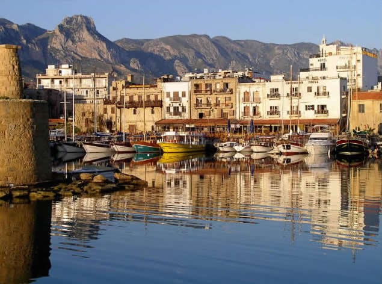
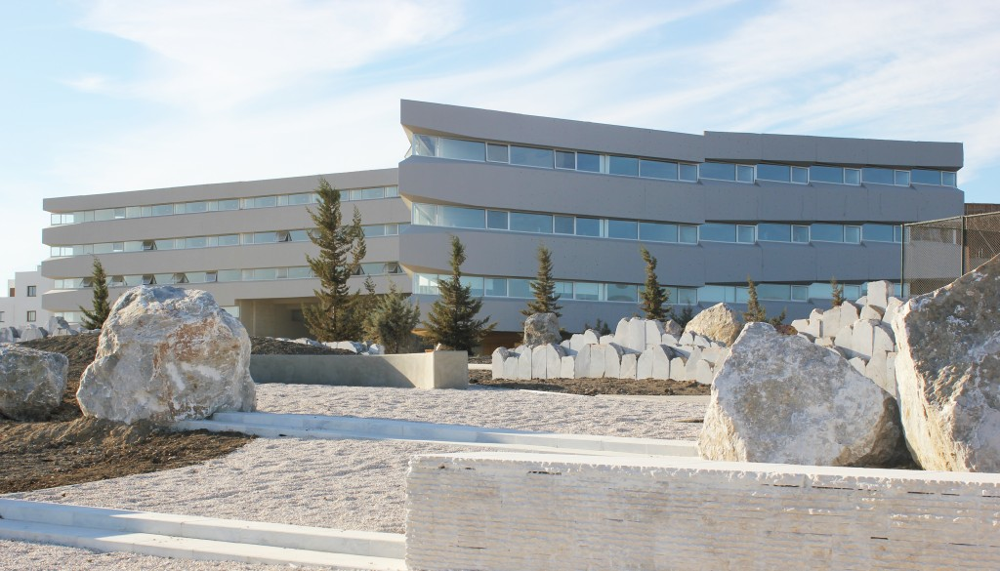
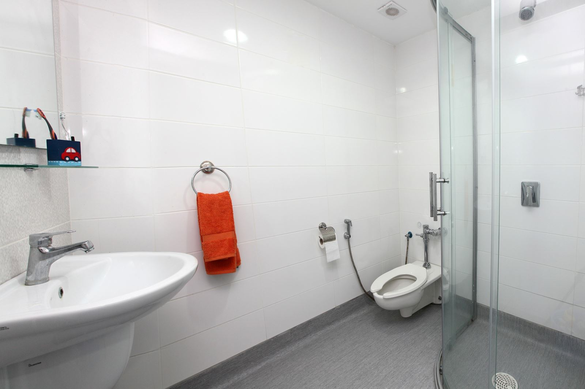
نشانی:ساری- میدان امام-ساختمان برلیان-طبقه اول-بالای بانک تجارت،واحد شماره 19
لطفا قبل از آمدن به موسسه با کارشناسان موسسه تماس بگیرید
موسسه اعزام دانشجو کندو دکتر عزیزی
با مجوز وزارت علوم
شماره های تماس جهت تعیین وقت
011333675000
09030612326
(زمان حضور آقای دکتر عزیزی: عصر های یک شنبه،سه شنبه و پنج شنبه از ساعت 16 الی 20)
Address:
Kühlwetterstraße 8.
Room Number 0227
52072 Aachen
Germany
Contact:01573 8947230-02418025258
Business Hours:
Mon 7:00PM - 9:30AM
Wed 7:00-9:30PM
Sat 10:00AM-6:30PM
Sun 10:00 AM - 6:30 PM


کلیه حقوق مرتبط به این وبسایت متعلّق به موسسه اعزام دانشجو کندو دانش آوران سام میباشد
cds.org.ir, Copyright©2015, All Rights Reserved
Design by : BOOMHUNK